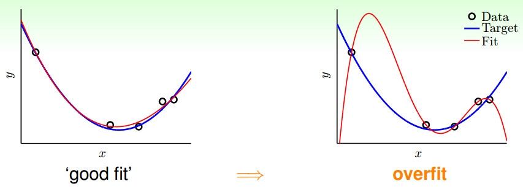

- 过拟合
- Batchsize
- 梯度弥散
什么是过拟合Overfit）
一个假设在训练数据上能够获得比其他假设更好的拟合，但是在训练数据外的数据集上却不能很好的拟合数据。此时我们就叫这个假设出现了overfit的现象。

如上图所示：过拟合，就是拟合函数需要顾忌每一个点，最终形成的拟合函数波动很大。在某些很小的区间里，函数值的变化很剧烈。这就意味着函数在某些小区间里的导数值（绝对值）非常大，由于自变量值可大可小，所以只有系数足够大，才能保证导数值很大。
造成过拟合的原因
* 模型的vc维过高，使用了过强的模型复杂度(model complexity)的能力。（参数多并且过训练）
* 数据中的噪声，造成了如果完全拟合的话，也许与真实情景的偏差更大。
* 数据量有限，这使得模型无法真正了解整个数据的真实分布。
* 权值学习迭代次数足够多(Overtraining),拟合了训练数据中的噪声和训练样例中没有代表性的特征。
过拟合解决方法
- 权值衰减
在每次迭代过程中以某个小因子降低每个权值,这等效于修改E的定义,加入一个与网络权值的总量相应的惩罚项,此方法的动机是保持权值较小,避免weight decay,从而使学习过程向着复杂决策面的反方向偏。（L2正则化） - 适当的stopping criterion（验证集）
- Cross-validation with some patterns
交叉验证方法在可获得额外的数据提供验证集合时工作得很好,但是小训练集合的过度拟合问题更为严重
k-fold交叉方法:把训练样例分成k份,然后进行k次交叉验证过程,每次使用不同的一份作为验证集合,其余k-1份合并作为训练集合.每个样例会在一次实验中被用作验证样例,在k-1次实验中被用作训练样例;每次实验中,使用上面讨论的交叉验证过程来决定在验证集合上取得最佳性能的迭代次数n*,然后计算这些迭代次数的均值,作为最终需要的迭代次数。
４. 正则化
这里有点疑问，正则化是为了防止过拟合还是为了解决过拟合。对部分无用的feature，定义其parameter(p3,p4)非常大，这样会导致训练结果w3,w4非常小，几乎为0，降低模型复杂度。
Batchsize的影响
Batch_Size（批尺寸）是机器学习中一个重要参数。
1. 如果数据集比较小，完全可以采用全数据集 （ Full Batch Learning ）的形式，这样做至少有 2 个好处：其一，由全数据集确定的方向能够更好地代表样本总体，从而更准确地朝向极值所在的方向。其二，由于不同权重的梯度值差别巨大，因此选取一个全局的学习率很困难。
2. Batch_Size = 1。这就是在线学习（Online Learning）。使用在线学习，每次修正方向以各自样本的梯度方向修正，横冲直撞各自为政，难以达到收敛。
3. 如果网络中采用minibatch SGD算法来优化，所以是一个batch一个batch地将数据输入CNN模型中，然后计算这个batch的所有样本的平均损失，即代价函数是所有样本的平均。而batch_size就是一个batch的所包含的样本数，显然batch_size将影响到模型的优化程度和速度。mini batch只是为了充分利用GPU memory而做出的妥协
改变Batch_Size的影响
1. 在合理范围内，增大 Batch_Size 的好处：内存利用率提高了，大矩阵乘法的并行化效率提高。跑完一次 epoch（全数据集）所需的迭代次数减少，对于相同数据量的处理速度进一步加快。在一定范围内，一般来说 Batch_Size 越大，其确定的下降方向越准，引起训练震荡越小。
梯度弥散
梯度弥散的问题很大程度上是来源于激活函数的“饱和”。因为在后向传播的过程中仍然需要计算激活函数的导数，所以一旦卷积核的输出落入函数的饱和区，它的梯度将变得非常小。梯度弥散。使用反向传播算法传播梯度的时候，随着传播深度的增加，梯度的幅度会急剧减小，会导致浅层神经元的权重更新非常缓慢，不能有效学习。这样一来，深层模型也就变成了前几层相对固定，只能改变最后几层的浅层模型。
如何解决梯度弥散
- Relu代替sigmoid
- 梯度裁剪
- RNN-LSTM
- 批归一化